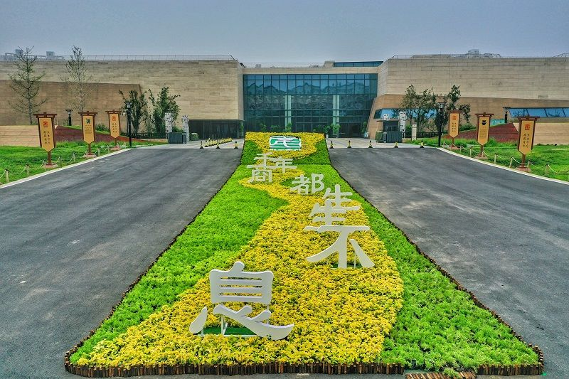
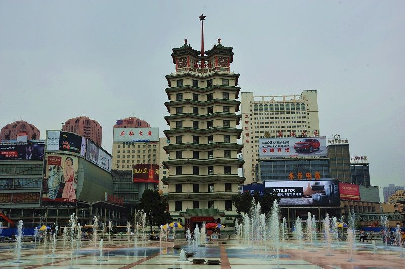
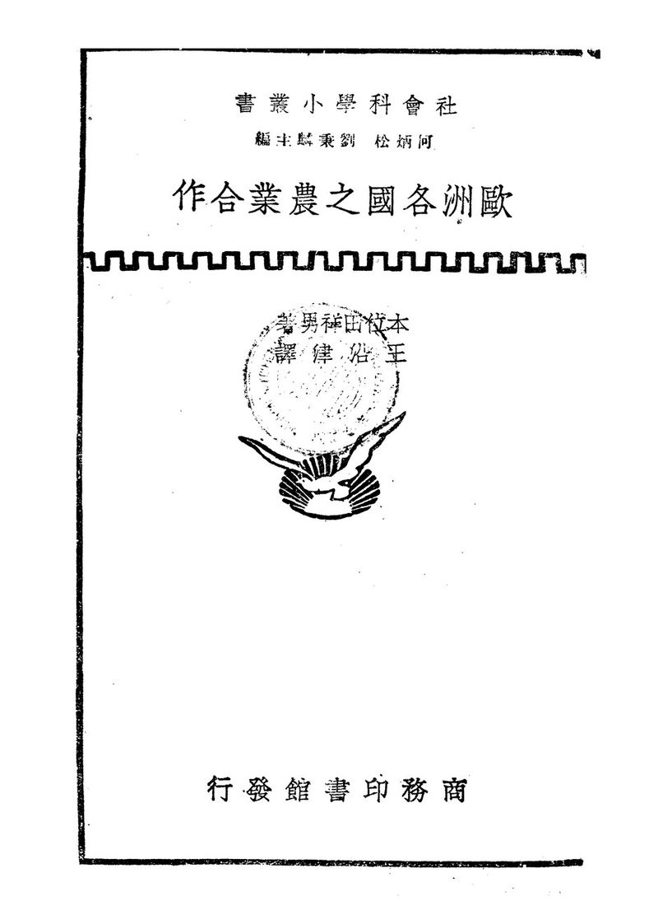
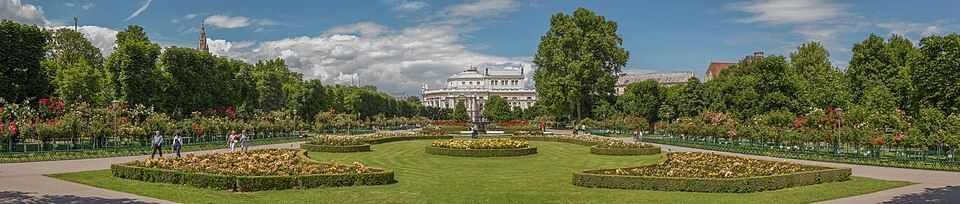
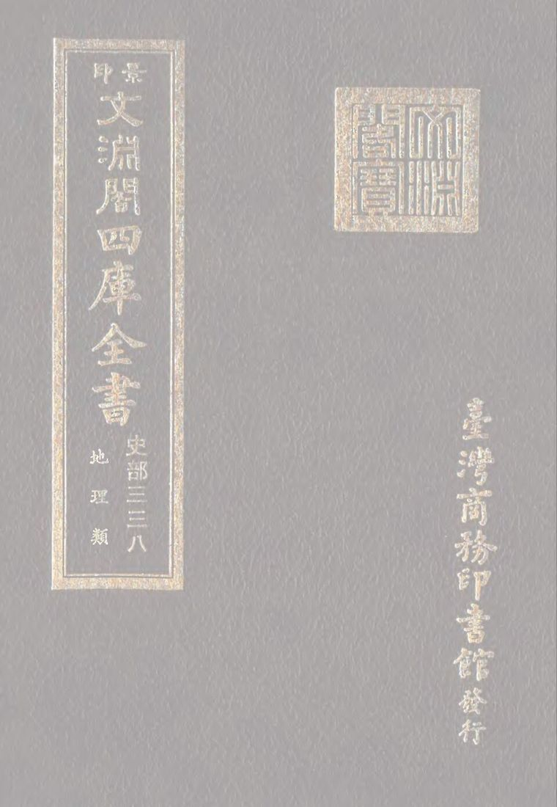

先看结论
-
郑州适合的玩法
- 中原文明线河南博物院、郑州博物馆、郑州商都遗址博物院、郑州文庙、郑州城隍庙、大河村遗址博物馆
- 城市地标线二七纪念塔、二七广场、德化街、油化厂创意园、郑州记忆·油化厂、郑东新区 CBD、大玉米、如意湖、千玺广场
- 沉浸文旅线只有河南·戏剧幻城、建业电影小镇、海昌海洋公园、方特、银基动物王国
- 黄河和自然线郑州黄河文化公园、黄河滩地公园、树右森林帐篷营地、郑州植物园、郑州树木园、绿博园、园博园、蝶湖
- 登封嵩山线少林寺、塔林、三皇寨、嵩阳书院、中岳庙、嵩山峻极峰
- 开封/洛阳联动线朱仙镇启封故园、清明上河园、龙亭、龙门石窟、洛阳博物馆、白马寺
-
必去优先级
- 第一梯队河南博物院、只有河南·戏剧幻城、郑州商都遗址博物院、二七纪念塔、油化厂、郑东新区 CBD 夜景、少林寺/嵩山
- 第二梯队郑州博物馆、河南省科技馆、河南自然博物馆、大河村遗址博物馆、黄河文化公园、建业电影小镇、德化街、健康路夜市
- 亲子优先河南省科技馆、河南自然博物馆、郑州海昌海洋公园、银基动物王国、郑州方特、郑州植物园、绿博园
- 雨天优先河南博物院、郑州博物馆、商都遗址博物院、河南省科技馆、河南自然博物馆、只有河南、商场吃喝
-
平台高频玩法
- 小红书风格河南博物院国宝、只有河南麦田和夯土墙、油化厂工业风、二七塔夜景、大玉米夜景、文博广场银杏、健康路夜市、德化街
- B 站 Vlog 风格河南博物院沉浸看展、只有河南一日/两日、登封嵩山少林、郑东新区航拍、二七塔和老城区 Citywalk
- 抖音路线风格二七广场、德化街、油化厂、健康路夜市、河南博物院、只有河南、海昌海洋公园、银基动物王国、少林寺
-
游玩原则
- 郑州本身不是纯山水城市，强项是中原历史、博物馆、交通中转、沉浸文旅和夜市吃喝
- 市区景点按东西南北分区串联，别一天里反复跨城
- 登封、开封、洛阳都适合从郑州做一日或两日延伸，不建议和郑州市区硬塞同一天
- 博物馆和科技馆预约非常关键，热门节假日优先抢票
快速决策索引
全年月份速查
季节限定景观
- 樱花
- 月季
- 牡丹/芍药
- 银杏
- 黄河滩和秋日芦苇
- 嵩山雪景
- 夜市季
景点营业时间和票价速查
-
使用说明
- 以下为常见开放时间和成人基础票价，节假日、夜场、演出、特展会调整
- 免费场馆也可能需要实名预约，热门节假日优先看官方预约页
- 开放式街区、商圈、夜市和公园以公共空间为主，具体店铺和摊位按各自营业为准
-
博物馆和展馆
- 河南博物院常见 9:00-17:30，16:30 停止入馆，周一闭馆，免费预约
- 郑州博物馆文翰街馆/嵩山路馆常见 9:00-17:00，16:30 停止入馆，周二至周日开放，免费预约
- 郑州商都遗址博物院常见 9:00-17:00，16:30 停止入馆，周一闭馆，免费预约
- 郑州市大河村遗址博物馆常见 9:00-17:00，周一闭馆，免费预约；以馆方公告为准
- 河南省科技馆常见 9:30-17:00，周三至周日开放，免费预约；影院/特展可能另计
- 河南自然博物馆常见 9:00-16:30，周一闭馆，免费预约；以馆方公告为准
- 郑州二七纪念塔/二七纪念馆常见 9:00-17:00，周一闭馆，免费预约
- 黄河博物馆常见 9:00-17:00，周一闭馆，免费预约；以馆方公告为准
- 郑州美术馆常见 9:00-17:00，周一闭馆，免费；特展/活动以公告为准
- 河南艺术中心/郑州大剧院公共空间按场馆开放，演出票价按具体演出
-
老城街区和商圈
- 二七广场开放式广场，全天可逛，免费
- 德化街开放式商业街，全天可逛，免费；店铺通常白天到夜间营业
- 油化厂/郑州记忆·油化厂开放式街区，免费；店铺、展览、市集按各自营业/收费
- 健康路夜市夜间摊位为主，免费；摊位营业以当天为准
- 伏牛路/国棉厂周边开放式街区，免费；小吃店和夜宵摊按各自营业
- 二七商圈/大卫城/万象城商圈免费；商场多为 10:00-22:00 左右，以各商场公告为准
- 龙湖里/北龙湖开放式商业街区，免费；店铺按各自营业
- 理在 阅空间书店/阅读空间，营业时间和消费规则以门店当日公告为准
-
古建和城市历史
- 郑州文庙常见 9:00-17:00，免费或预约参观，以现场公告为准
- 郑州城隍庙常见 9:00-17:00，免费或预约参观，以现场公告为准
- 商城遗址公园/商代城墙遗址开放式遗址公园，免费
-
郑东新区和城市夜景
- 如意湖/郑东新区 CBD/大玉米外景：开放式城市空间，全天可看，免费
- 千玺广场/大玉米观景和商业部分外景免费，楼内商业/观景/餐饮按各自营业和收费
- 郑州之林开放式公园，通常免费，开放时间以现场公告为准
- 会展中心外景开放式城市空间，免费；展会需按具体展会购票
-
沉浸文旅和主题乐园
- 只有河南·戏剧幻城营业时间随日期和演出安排变化；成人一日票常见 290 元左右，两日票/夜场/优惠票以官方购票页为准
- 建业电影小镇营业时间随日期和夜场变化；成人票常见 100 元左右，夜场/套票以官方购票页为准
- 郑州海昌海洋公园营业时间随日期变化；成人票常见 280 元左右，优惠票/年卡以官方购票页为准
- 郑州方特欢乐世界/梦幻王国营业时间随日期和夜场变化；成人票常见 280 元左右，套票以官方购票页为准
- 银基动物王国营业时间随日期变化；成人票常见 280 元左右，套票/酒店套票以官方购票页为准
- 银基冰雪世界/水世界营业时间和票价按季节、项目、套票变化，以银基官方购票页为准
-
公园、自然和露营
- 郑州黄河文化公园常见 8:00-18:00，成人票常见 48 元左右；观光车/索道等项目另计
- 黄河滩地公园开放式公园，通常免费；开放和管控以现场公告为准
- 树右森林帐篷营地营地营业、预约、露营/餐饮收费以商家当日公告为准
- 粉黛园花海/园区开放和票价以具体园区当年公告为准
- 郑州植物园常见 6:00-21:00，免费；花展/温室/活动以公告为准
- 郑州树木园开放式郊野公园，通常免费；开放时间以现场公告为准
- 郑州月季公园开放式公园，通常免费，开放时间以现场公告为准
- 人民公园/碧沙岗公园/紫荆山公园开放式市区公园，通常免费
- 绿博园常见 9:00-18:00，成人票常见 20 元左右；活动票以官方公告为准
- 园博园常见 9:00-18:00，成人票常见 45 元左右；活动/夜场以官方公告为准
-
登封、开封、洛阳和周边
- 嵩山少林景区常见 8:00-17:00，少林景区成人票常见 80 元；索道、观光车、三皇寨等另计或按套票
- 嵩阳书院常见 8:00-17:00，成人票常见 30 元左右；以嵩山景区公告为准
- 中岳庙常见 8:00-17:00，成人票常见 30 元左右；以嵩山景区公告为准
- 朱仙镇启封故园营业时间和票价随节假日/活动调整，成人票常见 60 元左右，以官方购票页为准
- 清明上河园营业时间随演出和夜场调整，成人票常见 120 元左右；夜游/演出票另计
- 龙门石窟常见 8:00-18:00，成人票常见 90 元；夜游/讲解/交通另计
- 洛阳博物馆常见 9:00-17:00，周一闭馆，免费预约
- 白马寺常见 7:40-18:00，成人票常见 35 元左右
- 巩义石窟寺/康百万庄园/宋陵开放时间和票价按各景区公告，适合出发前单独核对
行前准备
-
预约和闭馆
- 河南博物院热门，提前预约；通常周一闭馆，节假日可能调整
- 河南省科技馆热门亲子馆，通常需提前实名预约；注意周一周二维护闭馆口径
- 郑州博物馆文翰街馆和嵩山路馆分清，提前预约
- 郑州商都遗址博物院通常周一闭馆，适合和文庙、城隍庙同线
- 二七纪念塔/二七纪念馆通常周二至周日开放，周一闭馆
- 只有河南、建业电影小镇、银基、方特、海昌：演出和营业时间随日期变化，买票前查当天节目表
-
穿搭和装备
- 春秋适合 Citywalk，但风大，带薄外套
- 夏季防晒、遮阳、补水，户外安排早晚
- 冬季风冷明显，夜景和黄河边带厚外套
- 嵩山运动鞋、防风外套、登山杖可选，冬季看雪注意防滑
- 博物馆带身份证件，提前截图预约码
-
交通原则
- 市内地铁加打车够用，二七、郑东新区、河南博物院都适合地铁接驳
- 郑州东站适合住郑东新区、会展中心、CBD、东站周边
- 郑州站适合住二七广场、德化街、火车站周边
- 新郑机场到市区较远，晚到早飞优先住机场或地铁沿线
- 登封/少林寺建议单独一天，自驾、拼车或长途车
- 中牟文旅区只有河南、电影小镇、方特、海昌、绿博园相距不算市中心，适合同片区安排
住宿建议
-
二七广场/德化街/郑州站
- 适合第一次来、想吃夜市、想看二七塔、郑州站进出
- 优点老城区氛围强，吃喝集中，地铁方便
- 缺点部分街区老旧，人流车流密集
- 关键词二七广场、德化街、人民公园、大卫城、火车站
-
花园路/河南博物院/关虎屯
- 适合主打河南博物院、文博广场、健康路夜市
- 优点吃喝多，离河南博物院近，市区平衡
- 缺点早晚高峰堵
- 关键词农业路、花园路、关虎屯、文博广场、健康路
-
郑东新区/CBD/会展中心/郑州东站
- 适合高铁进出、商务、想住新一点、看大玉米夜景
- 优点酒店新，城市界面好，去东站方便
- 缺点老郑州烟火气弱，去二七和老城区略远
- 关键词郑州东站、会展中心、CBD、如意湖、千玺广场
-
中原区/常西湖/郑州博物馆
- 适合想逛郑州博物馆、郑州科技馆、奥体中心周边
- 优点新馆集中，环境开阔
- 缺点离老城和河南博物院较远
- 关键词文翰街、奥体中心、常西湖、市民公共文化服务区
-
中牟/文旅区
- 适合只有河南、建业电影小镇、方特、海昌、绿博园
- 优点玩主题乐园省通勤
- 缺点不适合作为郑州市区游 base
- 关键词只有河南、电影小镇、绿博园、方特、海昌
-
新密/银基度假区
- 适合银基动物王国、冰雪世界、亲子度假
- 优点度假区内体验完整
- 缺点离市区远，交通成本高
地图分区
-
老城二七区
- 核心点二七纪念塔、二七广场、德化街、人民公园、大卫城、郑州站、钱塘路、二七纪念堂
- 玩法地标拍照、老城 Citywalk、夜市吃喝
- 适合半天到 1 天
-
金水花园路/文博区
- 核心点河南博物院、文博广场、健康路夜市、郑州动物园、国贸 360、花园路商圈
- 玩法白天看馆，傍晚银杏/街区，晚上健康路夜市
- 适合看展和吃喝组合
-
管城商都区
- 核心点郑州商都遗址博物院、郑州文庙、郑州城隍庙、商代城墙遗址、东大街、商城遗址公园
- 玩法早商文明、古城墙、文庙城隍庙
- 适合历史线和雨天线
-
郑东新区
- 核心点大玉米、千玺广场、如意湖、会展中心、河南艺术中心、郑州之林、郑州东站
- 玩法现代城市夜景、湖边散步、拍照
- 适合晚上或高铁进出顺路
-
常西湖/中原区
- 核心点郑州博物馆文翰街馆、郑州科技馆、奥体中心、郑州大剧院、郑州美术馆
- 玩法新公共文化服务区，适合亲子和雨天
-
中牟文旅区
- 核心点只有河南、建业电影小镇、方特、海昌海洋公园、绿博园、园博园
- 玩法沉浸演艺、主题乐园、亲子
- 适合单独一天或住一晚
-
惠济黄河区
- 核心点郑州黄河文化公园、黄河滩地公园、黄河博物馆、思念果岭、树右森林帐篷营地
- 玩法黄河、露营、自然、秋日芦苇
-
登封嵩山
- 核心点少林寺、塔林、三皇寨、嵩阳书院、中岳庙、嵩山峻极峰
- 玩法少林文化、古建、山地徒步、秋色雪景
核心景点
-
河南博物院
- 最佳时间全年，雨天和冬夏尤其适合
- 看点贾湖骨笛、妇好鸮尊、莲鹤方壶、云纹铜禁、武则天金简、青铜器、陶瓷、玉器
- 玩法至少留 2.5-4 小时，建议租讲解或预约人工讲解
- 搭配文博广场银杏、健康路夜市、花园路商圈
- 值不值得专程值得，郑州第一文化核心
- 提醒提前预约，节假日票紧；开放时间以官方公告为准
-
只有河南·戏剧幻城
- 最佳时间春秋最舒服，夏季优先看夜场/室内剧场
- 看点麦田、夯土墙、地坑院、李家村剧场、火车站剧场、幻城剧场、小剧场群
- 玩法一日票适合精华，想看更多小剧场可考虑两日
- 搭配建业电影小镇、绿博园、中牟住宿
- 值不值得专程值得，郑州最强沉浸文旅之一
- 提醒场次、闭园、节目表每天不同，买票前看官方当日安排
-

来源图 郑州商都遗址博物院游玩攻略最佳时间：全年，雨天适合；看点：早商文明、郑州商城遗址、考古成果、商代城墙- 最佳时间全年，雨天适合
- 看点早商文明、郑州商城遗址、考古成果、商代城墙
- 搭配郑州文庙、郑州城隍庙、商城遗址公园
- 值不值得专程喜欢考古和城市历史的人值得
- 提醒通常周一闭馆，提前预约
-

来源图 二七纪念塔/二七广场游玩攻略最佳时间：晚上看灯，白天进馆看展；看点：郑州地标、京汉铁路工人大罢工历史、老城核心- 最佳时间晚上看灯，白天进馆看展
- 看点郑州地标、京汉铁路工人大罢工历史、老城核心
- 搭配德化街、人民公园、大卫城、郑州站
- 值不值得专程第一次来值得，之后顺路拍即可
- 提醒纪念馆通常周一闭馆，广场人多注意随身物品
-
油化厂/郑州记忆·油化厂
- 最佳时间下午到晚上
- 看点工业风、街区拍照、咖啡、餐饮、展览活动
- 搭配二七商圈、郑州博物馆、夜市
- 值不值得专程喜欢拍照和年轻街区值得
- 提醒店铺更新快，出发前看近期营业和活动
-
郑东新区 CBD/大玉米/如意湖
- 最佳时间傍晚到晚上
- 看点大玉米夜景、如意湖、会展中心、河南艺术中心、城市天际线
- 搭配郑州东站、会展中心、商场吃饭
- 值不值得专程夜景值得，白天不必久留
-
来源图 郑州博物馆游玩攻略最佳时间：全年，雨天适合；看点：郑州历史脉络、商代文明、地方文物、非遗展- 最佳时间全年，雨天适合
- 看点郑州历史脉络、商代文明、地方文物、非遗展
- 搭配郑州科技馆、奥体中心、郑州美术馆
- 值不值得专程时间充裕或住中原区值得
- 提醒文翰街馆和嵩山路馆分清
-
河南省科技馆
- 最佳时间全年，亲子和雨天尤其适合
- 看点宇宙天文、动物家园、童梦乐园、人工智能、特效影院
- 搭配郑东新区、河南自然博物馆
- 值不值得专程亲子强烈值得
- 提醒非常热门，提前抢预约
-
河南自然博物馆
- 最佳时间全年
- 看点恐龙、古象、地质矿物、生物演化
- 搭配河南省科技馆、郑东新区
- 值不值得专程亲子和自然爱好者值得
-
大河村遗址博物馆
- 最佳时间全年
- 看点仰韶文化、史前聚落、彩陶、遗址保护展示
- 搭配郑东新区/北龙湖一带
- 值不值得专程考古爱好者值得
-
郑州文庙
- 最佳时间全年，上午或下午
- 看点古代州学和孔庙、老城历史
- 搭配商都遗址博物院、城隍庙、东大街
- 值不值得专程适合历史线顺路
-
郑州城隍庙
- 最佳时间全年，和文庙同线
- 看点古建筑、老城气质、民俗
- 搭配文庙、商都遗址博物院
-
黄河文化公园
- 最佳时间春秋、秋日傍晚、冬季晴天
- 看点黄河、炎黄二帝塑像、黄河地貌、开阔景观
- 搭配黄河滩地公园、惠济黄河边、树右森林帐篷营地
- 值不值得专程想看黄河值得
- 提醒景区较分散，自驾体验更好
-
少林寺/嵩山
- 最佳时间春秋、10-11 月秋色、雪后冬景
- 看点少林寺常住院、塔林、武术表演、三皇寨、嵩山地质景观
- 搭配嵩阳书院、中岳庙、登封住宿
- 值不值得专程值得，适合单独一天
- 提醒不要把登封和郑州市区太多点塞进同一天
街区、商圈和夜市
-
德化街
- 最佳时间下午到晚上
- 看点老牌商业街、二七商圈、逛吃
- 搭配二七塔、大卫城、郑州站
-
健康路夜市
- 最佳时间晚上
- 看点本地夜市、小吃密度高
- 搭配河南博物院、文博广场、花园路
- 提醒摊位和热度变化快，出发前看当天营业
-
伏牛路/国棉厂周边
- 最佳时间晚上
- 看点老郑州生活气、夜宵、小吃
- 玩法适合本地烟火气路线
-
二七商圈
- 最佳时间下午到晚上
- 看点二七塔、德化街、大卫城、万象城、老城区人流
-

开放图库 油化厂创意街区游玩攻略最佳时间：下午到晚上；看点：工业风、咖啡、拍照、活动、市集- 最佳时间下午到晚上
- 看点工业风、咖啡、拍照、活动、市集
-
理在 阅空间
- 类型阅读空间/书店/文艺休息点
- 适合看书、休息、拍照、慢节奏约会
- 搭配按实际位置和当天商圈路线安排
-
龙湖里/北龙湖
- 最佳时间傍晚到晚上
- 看点新郑州商业街区、湖景、餐饮
- 搭配郑东新区、河南省科技馆
-
砂之船奥莱/杉杉奥莱/华润万象城/大卫城
- 最佳时间夏季避暑、冬季避寒、雨天
- 玩法吃饭、购物、临时替换户外行程
市场和市井
-
菜市场方向
- 玩法早餐、胡辣汤、油馍头、包子、烧饼
- 提醒郑州不如昆明那类旅游型农贸市场强，更多是本地生活气，按住宿附近找即可
-
健康路夜市
- 可吃烤串、炸串、烤冷面、炒凉粉、鸡蛋灌饼、臭豆腐、小龙虾季节摊
-
德化街/二七小吃
- 可吃烩面、锅贴、热干面式小吃、炸串、甜品饮品
-
老城区早餐
- 可吃胡辣汤、油馍头、水煎包、菜角、包子、豆腐脑
-
伴手礼购买
- 烩面半成品
- 胡辣汤料包
- 新郑红枣
- 少林寺素饼/登封特产
- 开封花生糕
- 道口烧鸡
- 河南博物院文创
- 蜜雪冰城周边
美食总表
-
必吃特色
- 烩面郑州代表性主食，羊肉汤底和宽面是核心
- 胡辣汤早餐核心，配油馍头/水煎包
- 葛记焖饼郑州老字号方向，适合想吃本地传统
- 合记烩面老字号方向，适合带外地朋友吃
- 方中山胡辣汤重口胡辣汤代表，排队和口味都比较强
- 蔡记蒸饺老字号小吃方向
- 水煎包早餐常见
- 油馍头配胡辣汤
- 菜角早餐油炸类
- 炒凉粉夜市常见
- 羊肉汤/牛肉汤秋冬适合
- 烧饼夹牛肉登封、少林寺周边也常见
-
河南周边联动美食
- 开封灌汤包
- 桶子鸡
- 花生糕
- 洛阳水席
- 登封焦盖烧饼
- 新郑红枣
- 道口烧鸡
-
夜宵
- 烧烤
- 炸串
- 炒凉粉
- 小龙虾
- 涮牛肚
- 砂锅
- 麻辣烫
-
饮品
- 蜜雪冰城郑州本土品牌，可以作为城市彩蛋
- 眷茶/本地茶饮路过可买
- 商场奶茶/饮品店逛街或看展后顺路买，具体门店按当天所在商圈确认
-
甜食和伴手礼
- 花生糕
- 枣糕
- 麻叶
- 江米条
- 河南博物院文创雪糕/文创
餐厅和店铺
-
釜汀韩式无限自助烤肉
- 类型韩式烤肉自助
- 适合轻松聚餐、肉类自助、商场吃饭
- 提醒出发前确认具体门店、价格、排队和营业
-
合记烩面
- 类型郑州老字号烩面
- 适合第一次吃郑州烩面
-
方中山胡辣汤
- 类型胡辣汤代表
- 适合能接受胡椒和重口的人
- 提醒口味冲，不一定人人适应
-
葛记焖饼
- 类型老字号焖饼
- 适合想吃传统郑州味
-
蔡记蒸饺
- 类型老字号小吃
- 适合早餐/午饭
-
萧记三鲜烩面
- 类型烩面方向
- 适合想多试几家烩面时加入
-
本地羊肉汤/牛肉汤店
- 类型秋冬早餐或晚饭
- 选择看住宿附近高分老店，别为了一碗汤跨城
博物馆和展馆
-
河南博物院
- 类型省级顶级博物馆
- 重点中原文明、青铜器、镇馆之宝
- 时间至少半天
-
来源图 郑州博物馆游玩攻略优先安排早晚光线和低峰时段；出发前复核开放时间、门票、预约和天气。- 类型城市综合博物馆
- 重点郑州历史、商都文明、城市脉络
- 分馆文翰街馆、嵩山路馆
-
来源图 郑州商都遗址博物院游玩攻略郑州商都遗址博物院- 类型商代都城遗址主题
- 重点郑州商城、早商文明
-
郑州市大河村遗址博物馆
- 类型史前遗址
- 重点仰韶文化、彩陶、遗址
-
河南省科技馆
- 类型科技馆/亲子馆
- 重点互动展项、天文、人工智能、儿童科学
-
河南自然博物馆
- 类型自然科学
- 重点恐龙、地质、古象、矿物
-
郑州二七纪念馆
- 类型红色纪念馆
- 重点京汉铁路工人大罢工、二七塔
-
黄河博物馆
- 类型黄河文化和治黄历史
- 搭配黄河文化公园/黄河边
-
郑州美术馆
- 类型美术展馆
- 搭配郑州博物馆、奥体中心、郑州大剧院
-
河南艺术中心/郑州大剧院
- 类型演出场馆
- 玩法每次出发前看当期演出
亲子和主题乐园
-
河南省科技馆
- 适合亲子、科学互动、雨天避暑
- 提醒提前抢预约
-
河南自然博物馆
- 适合恐龙、地质、自然科普
-
郑州海昌海洋公园
- 适合亲子、海洋动物、演艺、夏季室内外结合
- 位置中牟文旅区
- 提醒动物表演和开放项目以当天为准
-
银基动物王国
- 适合亲子、动物、游乐设备、度假区
- 位置新密银基国际旅游度假区
- 提醒离市区远，适合单独一天或住度假区
-
银基冰雪世界
- 适合夏季避暑、冬季亲子、冰雪体验
-
郑州方特
- 适合主题乐园、亲子、年轻人
- 位置中牟绿博片区
- 提醒营业时间和夜场按官方公告
-
建业电影小镇
- 适合拍照、演艺、民国风街区、夜场
- 搭配只有河南、绿博园
-
绿博园
- 适合春季赏花、亲子散步、园林
- 搭配方特、电影小镇、只有河南
-
园博园
- 适合园林、亲子、春秋散步
- 提醒面积大，别和太多点硬塞
自然、公园和露营
-
郑州黄河文化公园
- 最佳时间春秋、秋日傍晚
- 看点黄河、炎黄二帝塑像、开阔地貌
-
黄河滩地公园
- 最佳时间秋季、傍晚
- 看点芦苇、黄河边、骑行/散步
- 提醒注意安全，不去未开放滩地
-
树右森林帐篷营地
- 适合露营、拍照、轻度户外
- 提醒露营地营业、预订、天气和装备要求出发前确认
-
粉黛园
- 最佳时间9-10 月粉黛乱子草季
- 适合拍照、秋季花海
- 提醒确认具体地点和当年开放状态
-
郑州植物园
- 最佳时间3-5 月花季、10-11 月秋色
- 看点樱花、牡丹、芍药、科普、亲子
-
郑州树木园
- 最佳时间春季赏花、秋季红叶
- 看点树木、郊野感、轻徒步
-
郑州月季公园
- 最佳时间4 月下旬至 5 月
- 看点月季、市花主题
-

开放图库 人民公园游玩攻略最佳时间：春季花、11 月银杏、日常散步；搭配：二七广场、德化街- 最佳时间春季花、11 月银杏、日常散步
- 搭配二七广场、德化街
-
碧沙岗公园
- 最佳时间春秋
- 看点老公园、绿地、城市散步
-
紫荆山公园
- 最佳时间春秋
- 看点市区公园、顺路散步
-

开放图库 郑州之林游玩攻略最佳时间：秋季银杏、郑东新区夜景前后；搭配：CBD、如意湖- 最佳时间秋季银杏、郑东新区夜景前后
- 搭配CBD、如意湖
远郊和周边一日
-
登封少林寺/嵩山
- 适合历史文化、山景、武术、古建
- 时间完整一天
- 推荐少林寺、塔林、武术表演、三皇寨
- 延伸嵩阳书院、中岳庙
- 提醒强度可大可小，三皇寨徒步量不小
-
开封一日
- 适合宋文化、夜市、小吃
- 推荐清明上河园、龙亭、开封府、鼓楼夜市/书店街、万岁山
- 食物灌汤包、桶子鸡、花生糕、炒凉粉
- 提醒节假日开封人非常多
-
朱仙镇启封故园
- 位置开封市朱仙镇，郑州出发约 1 小时级别
- 适合古镇、年画、宋韵/民俗风格
- 搭配开封一日游
-
洛阳一日
- 适合龙门石窟、洛阳博物馆、白马寺、隋唐洛阳城
- 推荐高铁往返更省心
- 提醒牡丹季和节假日住宿/门票紧张
-
巩义一日
- 适合石窟寺、康百万庄园、宋陵
- 玩法历史遗迹和古建
-
新郑一日
- 适合黄帝故里、郑韩故城、新郑博物馆、红枣
- 玩法黄帝文化和郑韩历史
-
荥阳/古柏渡
- 适合春季樱花、黄河边、轻郊游
- 提醒花期强相关，错季价值下降
路线模板
交通细节
-
郑州东站
- 高铁主站，适合住郑东新区、CBD、会展中心
- 去河南博物院、二七广场可地铁接驳
-
郑州站
- 老火车站，离二七广场近
- 周边人流复杂，住宿注意选择正规酒店
-
新郑机场
- 到市区距离较远
- 机场城际/地铁/打车都可，晚到早飞优先住机场或南部地铁沿线
-
市区地铁
- 二七广场老城核心换乘
- 关虎屯/农业路附近河南博物院方向
- 会展中心/中央商务区郑东新区夜景
- 郑州东站高铁和新城方向
- 绿博园/中牟方向先查最新线路和末班车
-
去只有河南/电影小镇/方特/海昌
- 建议打车、自驾、景区接驳或地铁加打车
- 晚场结束返程要提前约车
-
去少林寺/登封
- 自驾最灵活
- 公共交通需预留换乘时间
- 节假日不要卡末班返程
避坑和取舍
-
不要低估预约难度
- 河南博物院、河南省科技馆、热门博物馆节假日票很紧
-
不要把只有河南当普通景点随便逛
- 它主要看剧场和动线，提前看节目表体验差别很大
-
不要一天硬塞郑州市区、只有河南、少林寺
- 三者方向和耗时都不同
-
不要只按短视频最低价和最美图判断
- 夜市摊位、主题乐园活动、花期、灯光都动态变化
-
不要夏季中午长时间户外
- 郑州夏天热，户外放早晚
-
不要冬季轻装去黄河边和嵩山
- 风大且冷，体感比市区更低
-
不要错季追花
- 樱花、月季、银杏、红叶都有短窗口
-
不要在火车站周边随便跟拉客
- 住宿、包车、景区票都走正规平台
-
不要把郑州美食想象成精致打卡型
- 郑州更偏主食、汤饭、夜市和老店，重在实在
出发前复核清单
来源参考
-
河南博物院
- https//www.chnmus.net/
- https//www.chnmus.net/ch/service/index.html
-
郑州博物馆
- https//www.hnzzmuseum.com/html/web/fw/index.html
- https//zz.bendibao.com/jingdian/zhengzhoubowuguanwenhanjieguan/
-
郑州商都遗址博物院
- https//www.zhengzhou.gov.cn/view45/6664682.jhtml
- https//zz.bendibao.com/news/20211222/88407.shtm
-
河南省科技馆
- https//www.hstm.org.cn/audienceService/tickets/index.html
-
二七纪念塔/二七纪念馆
- https//www.zhengzhou.gov.cn/view23/6474468.jhtml
- https//www.zhengzhou.gov.cn/view45/6433322.jhtml
- https//hct.henan.gov.cn/2023/02-07/2684817.html
-
只有河南·戏剧幻城
- https//www.henan.gov.cn/2021/06-06/2158888.html
- https//www.bilibili.com/video/BV1tj411t7CW
- https//www.bilibili.com/video/BV1Gw41157JE/
- https//www.bilibili.com/video/BV1sc411H7Ld/
-
嵩山少林景区
- https//www.songshancn.com/service.php
- https//www.songshancn.com/intro_info.php?softid=384
-
黄河文化公园/郑州景点
- https//zz.bendibao.com/jingdian/zhengzhouhuanghewenhuagongyuan/
-
银基动物王国
- https//www.ctsb.com.cn/SceneryShow?ID=39
- https//m.zz.bendibao.com/jingdian/yinjidongwuwangguo/
-
建业电影小镇
- https//m.zz.bendibao.com/jieri/150973.shtm
-
季节花期和秋色
- https//finance.sina.com.cn/jjxw/2025-02-19/doc-inekzkhe5593617.shtml
- https//zz.bendibao.com/news/zhuantiyinxin/
- https//ylj.zhengzhou.gov.cn/ylzx/9731288.jhtml
- https//zz.bendibao.com/tour/zhuantihongye/
-
B 站路线和社媒玩法参考
- https//www.bilibili.com/video/BV1544y157RT/
- https//www.bilibili.com/video/BV1Kb411t7NW/
- https//www.bilibili.com/video/BV1PDc1e8E1w/
-
营业时间和票价补充核对
- https//www.hstm.org.cn/audienceService/tickets/index.html
- https//www.songshancn.com/service.php
- https//www.songshancn.com/intro_info.php?softid=384
- https//www.ctsb.com.cn/SceneryShow?ID=39
- https//zz.bendibao.com/jingdian/zhengzhouhuanghewenhuagongyuan/
- https//m.zz.bendibao.com/jingdian/yinjidongwuwangguo/
- https//m.zz.bendibao.com/jieri/150973.shtm